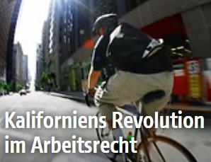

| INLAND |
|---|
| Ex-ÖVP-Chef Mitterlehner in Wahlkampfvideo der SPÖ |
| Letzte Nationalratstagung vor Wahl bringt wichtige Gesetze |
| BUWOG-Prozess: Grasser verweist auf Haider und andere |
| Umfrage: Vierzig Prozent sehen Demokratie in Gefahr |
| EU |
|---|
| Widerstand gegen von der Leayens Namen für Migrationsressort |
| EuGH wies Klage gegen Zulassung von Gensojabohne zurück |
| Hahn für EU-Beitrittsverhandlungen mit sSkopje und Tiana |
| Gesundheitskommisar: Impfen notfalls zur Pflicht machen |
| AUSLAND |
|---|
| Zehn Millionen neue Binnenvertriebene um ersten Halbjahr 2019 |
| Vor Lokalwahlen in Ungarn: Polizei durchsucht Oppositionsbüro |
| Menschen auf der Flucht: Hunderte erreichten Griechenland |
| Hausduchsuchungen bei Nawalny-Ünterstützern in Russland |
| Sport |
|---|
| Zehn Millionen neue Binnenvertriebene um ersten Halbjahr 2019 |
| Vor Lokalwahlen in Ungarn: Polizei durchsucht Oppositionsbüro |
| Menschen auf der Flucht: Hunderte erreichten Griechenland |
| Huasduchsuchungen bei Nawalny-Ünterstützern in Russland |
| Wirtschaft |
|---|
| Zehn Millionen neue Binnenvertriebene um ersten Halbjahr 2019 |
| Vor Lokalwahlen in Ungarn: Polizei durchsucht Oppositionsbüro |
| Menschen auf der Flucht: Hunderte erreichten Griechenland |
| Huasduchsuchungen bei Nawalny-Ünterstützern in Russland |
| Chronik |
|---|
| Zehn Millionen neue Binnenvertriebene um ersten Halbjahr 2019 |
| Vor Lokalwahlen in Ungarn: Polizei durchsucht Oppositionsbüro |
| Menschen auf der Flucht: Hunderte erreichten Griechenland |
| Huasduchsuchungen bei Nawalny-Ünterstützern in Russland |